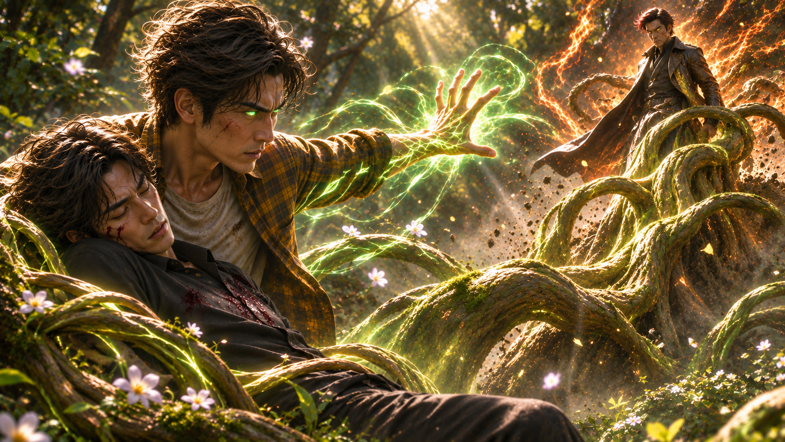
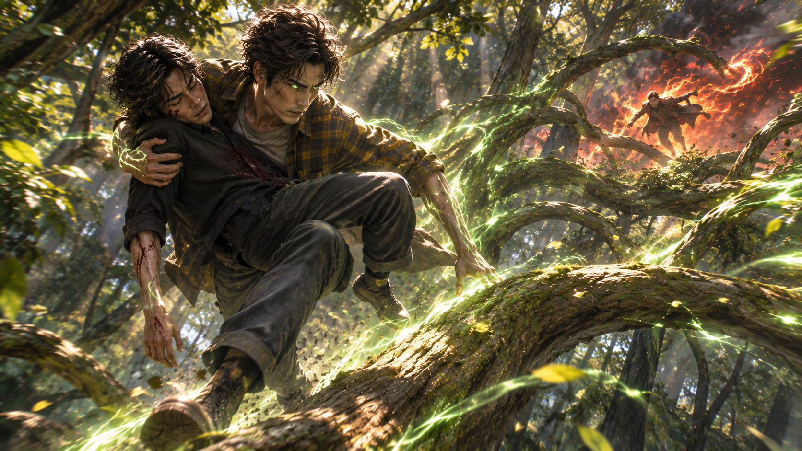
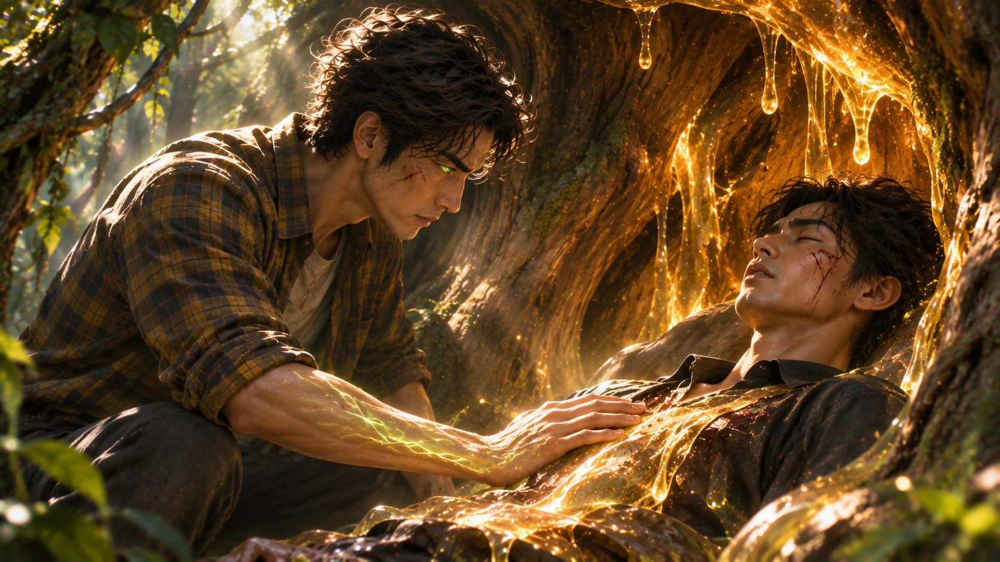
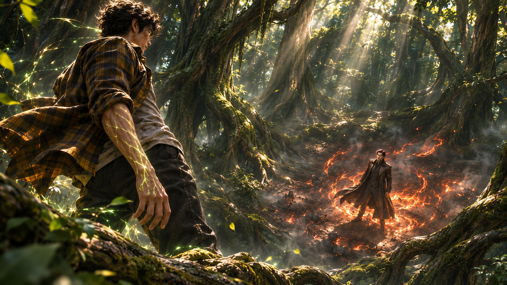
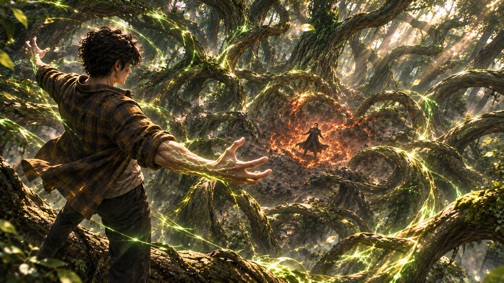
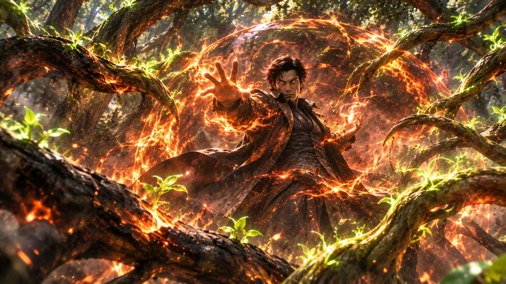
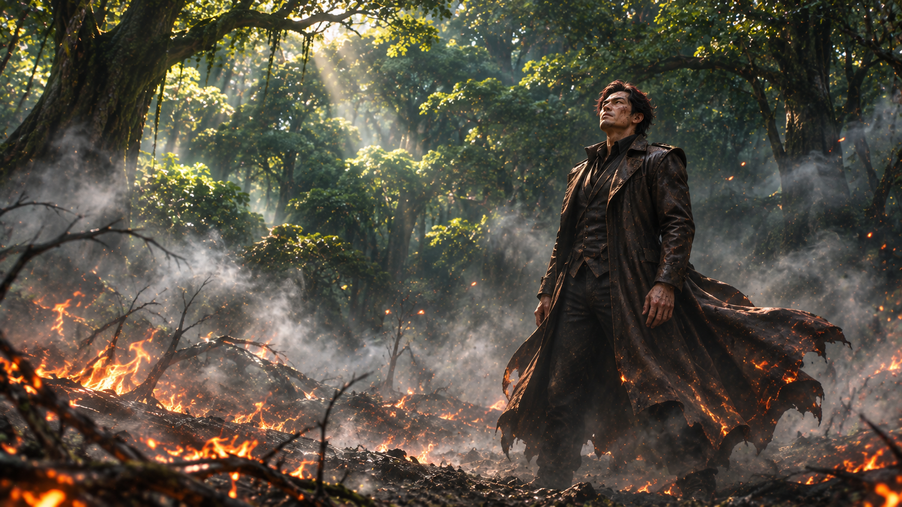
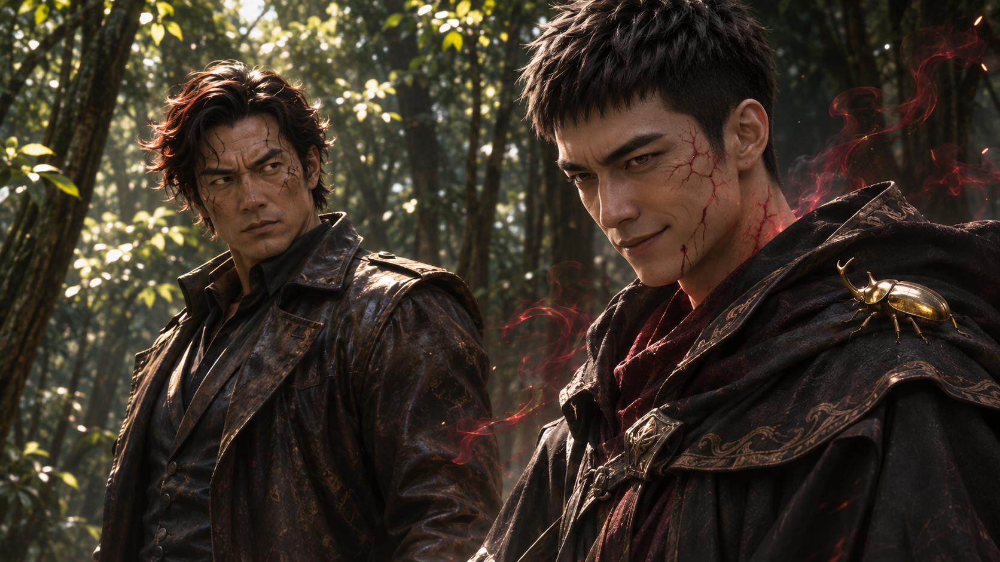
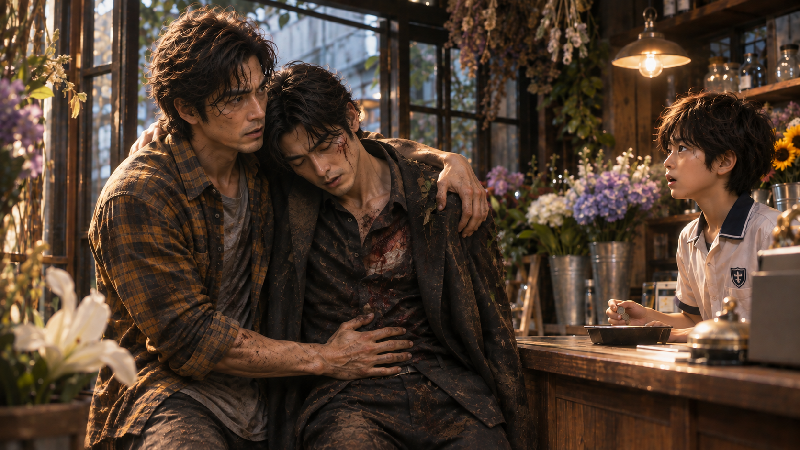
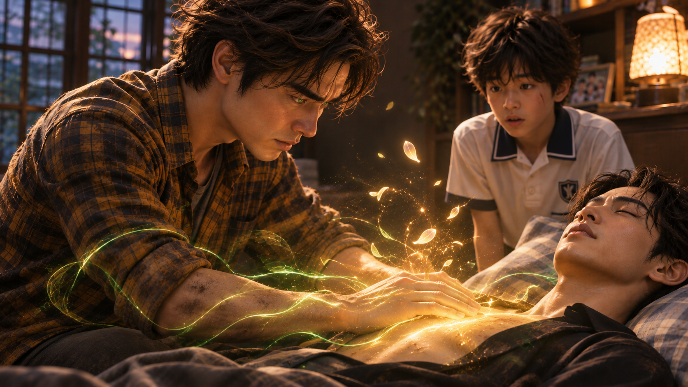

「魔君……」
景皓望著眼前的男人，心頭一沉。
那股壓迫感，他不會認錯。
眼前這個周身纏繞著火焰的男人，絕不是普通的惡魔。
「真不愧是所謂的『木翼』。」
炎君緩緩落在林間，腳下的枯葉被熱浪捲起，尚未觸及他的衣角，便已焦黑捲曲。
「連我這副模樣都能認出來。」
他漫不經心地掃視四周，最後將目光落在景皓身旁的景毅身上。
「本來還想多欣賞一下你們兄弟的對決。沒想到，你弟弟的怒火竟然這麼……短暫。」
炎君走近一步，鞋尖輕輕碰了碰倒在地上的景毅。
景皓的眼神瞬間冷了下來。
「抱歉打斷你的娛樂。」
他不動聲色地將右手垂至身後，指尖微微張開。
「不過，我相信你們這種超越惡魔的存在，應該不是特地跑來看我們兄弟吵架的吧？」
景皓瞥了一眼遠處倒地的黑衣男子。
「還有，後面那位大叔，也是你們的人？」
「別這麼著急嘛。」
炎君攤開雙手，語氣帶著幾分戲谑。
「今天可是我們第一次見面。先聊聊天，再進入正題，不是比較有禮貌？」
「如果你是來協商的……」
景皓緩緩抬起眼。
「那我以過來人的經驗告訴你——」
他的五指猛然收攏。
「你說得太多了！」
轟——！
炎君腳下的土地驟然隆起！
一道粗壯的樹根破土而出，帶著碎石與泥沙直衝天際。緊接著，數條盤根錯節的巨木從地底翻湧而上，宛如一座突然拔地而起的森林，瞬間吞沒炎君原本站立的位置！
「什——」

炎君反應極快，身軀猛然燃起烈焰，借著火勢向上升起。
幾乎同時，身後的巨樹伸出枝幹，形成一道向上延伸的階梯。
景皓抱緊景毅，腳下一蹬。
樹枝接連托住他的落點，將兩人送往高處。
整個過程不過數秒。
「想去哪裡？」
半空中的炎君俯視著他們，眼底的枯葉色光芒微微亮起。
他抬右手。
三團烈火驟然成形，拖著赤紅色的尾焰，朝兩人追去！
景皓甚至沒有回頭。
「起！」
沿途數棵巨木同時扭轉樹身，粗壯的枝幹交錯合攏，形成一道道天然屏障。
轟！轟！轟！
火焰接連撞上樹牆。
樹皮爆裂，火光四散，濃煙瞬間吞沒半片林冠。
景皓趁勢踏上另一條延伸而來的枝幹。
樹木彷彿早已知道他的去向，在他抵達之前便自行生長、彎曲，為他鋪出一條穿梭林間的道路。
一棵接著一棵。
他的身影在樹冠間疾速移動，轉眼便消失於煙霧之中。

然而——
「以為這樣就能甩掉我？」
炎君冷笑。
火光在林間一閃而逝。
他竟毫不猶豫地追了上去。
風聲不斷掠過耳畔。
景皓抱著景毅，在密林間迅速穿梭。
景毅的呼吸越來越急促，額頭滲出細密的冷汗。
「景毅！」
景皓低頭看著弟弟。
「你能自己治療嗎？」
「我……試過了……」
景毅艱難地將手按在胸前。
掌心浮現微弱的聖術光芒，卻只是閃爍幾下，便逐漸黯淡。
「不行……力量……」
他咬緊牙關，沒能把話說完。
景皓眉頭緊鎖。
「別勉強了。」
他迅速環顧四周，目光停在一棵樹幹異常粗壯的老樹上。
「再撐一下，我有辦法。」
景皓踏上枝幹，借力躍下。
落地的瞬間，他將手掌貼上樹皮。
翠綠色的光芒沿著掌紋滲入樹幹。
下一秒，整棵大樹傳出低沉的震動。
喀……喀喀……
樹幹中央緩緩向兩側分開，露出一處足以容納成人的空間。
金黃色的樹汁沿著內壁緩緩流下，質地濃稠，宛如溫熱的蜂蜜。
「先躺在這裡。」
景皓小心翼翼地將景毅安置其中。
「如果剛才那一擊真的是魔君造成的，你的傷勢恐怕不會像普通傷口那樣恢復。」
他伸手沾起少許樹汁。
「這些樹汁能暫時減緩惡化，但撐不了太久。」
景毅看著逐漸覆蓋胸前的金黃色樹汁，呼吸仍有些急促。

「梁景皓……」
「別說話，保存體力。」
景皓確認樹汁已經包覆傷處，這才站起身。
「我去拖住那個傢伙。」
他轉身準備離開。
忽然，一隻手抓住了他的手腕。
「等等……」
景皓回頭。
景毅垂著眼，沉默了幾秒。
「我收回……我之前說過的話。」
「什麼？」
「說你跟那些怪物……沒兩樣。」
景毅的聲音很輕。
「那句話……我收回。」
景皓愣了一下。
十年來，他曾經想過無數種與弟弟重逢的方式。
卻從沒想過，自己會在這樣的情況下，聽見這句話。
他沒有追問，也沒有責怪。
只是輕輕拍了拍景毅的手。
「好。」
景皓露出一抹淡淡的笑容。
「等你醒來，我們再慢慢聊。」
他將手掌重新貼上樹幹。
枝葉緩緩合攏，將景毅藏進樹木深處，只留下細微的空隙供他呼吸。
「我馬上回來。」
景皓退後一步。
閉上雙眼。
微風掠過林間。
周圍的野花輕輕搖曳，花瓣表面浮現出細緻的光點。
鳳凰木、紫羅蘭，以及其他散落在林間的花朵，接連釋放出不同色澤的精華。
金色、青綠、淡紫……
光芒宛如細小的溪流，沿著空氣匯入景皓體內。
他的手臂浮現出若隱若現的發光紋路，彷彿植物的葉脈正在皮膚之下延伸。
景皓睜開眼。
翠綠色的虹膜映著整片森林。
「接下來……」
他望向遠處。
「換我陪你玩。」
砰！
腳下的土地猛然下陷。
景皓一躍而起，身影穿過樹冠，直衝高空！
他沒有隱藏自己的氣息。
相反地，他刻意讓體內的聖術能量向四周擴散。
就像在森林上空點亮了一盞燈。
一盞專門為炎君準備的燈。
「找到你了。」
炎君抬起頭。
遠處，一道翠綠色的光芒掠過樹梢。
他嘴角微微上揚。
下一瞬，整個人化作一道火光，疾速追去。
不久後，炎君降落在一片林間空地。
腳下的泥土仍帶著潮氣。
四周安靜得出奇。
他抬頭望去。
這裡的樹木，比先前經過的地方更加高大。
粗壯的樹幹層層排列，樹冠幾乎遮蔽天空。
甚至連林間的風，都像是被某種力量引導著。
「把我帶到這裡？」
炎君環顧四周。

「怎麼，想讓我欣賞大自然的美景？」
「年輕人。」
景皓的聲音從左側傳來。
炎君猛然轉頭。
卻只看見一棵巨樹。
「我跟你無冤無仇。」
景皓的聲音再次響起，這回卻來自另一個方向。
「你們到底想從我們兄弟身上得到什麼？」
炎君冷笑。
「確實無冤無仇。」
他慢慢轉身。
「我只是想借一樣東西。」
「借東西？」
景皓的聲音在林間迴盪。
「有必要搞成這樣嗎？」
「這句話應該由我來問吧？」
炎君攤開雙手。
「我才剛準備進入正題，你就拿一大堆草木往我身上招呼。這算哪門子的禮貌？」
「你的人傷了我弟弟。」
景皓的聲音驟然冷了下來。
「拜託，動手的又不是我。」
炎君顯得有些不耐煩。
「那傢伙想做什麼，我可管不著。」
「所以，你確實認識他。」
炎君沉默了一瞬。
隨即嗤笑。
「你倒是挺會套話。」
「彼此彼此。」
景皓的聲音再次換了位置。
「所以呢？你到底想借什麼？」
「我想借的東西……」
炎君抬起右手。
一簇火苗在掌心緩緩燃起。
「恐怕你不會輕易交出來。」
「那你來這裡做什麼？」
「很簡單。」
炎君五指一握。
火苗驟然膨脹，化作熊熊烈焰。
「我會讓你乖乖交出來。」
「想得真美。」
炎君眼神一沉。
「你應該知道吧？」
他緩緩舉起燃燒的手掌。
「木頭，是贏不了火焰的。」
四周的空氣開始扭曲。
「現在出來談，說不定我還能考慮讓你少吃點苦頭。」
短暫的沉默。
接著，景皓笑了。
「確實。」
「嗯？」
「木頭遇上火，通常沒有勝算。」
他的聲音從樹冠上方傳來。
「不過，我也告訴你一個小秘密。」
炎君抬頭。
只見景皓站在高處的枝幹上，居高臨下地望著他。
午後的陽光穿過樹葉，在他的芥末黃色格子襯衫上留下斑駁光影。
那雙翠綠色的眼睛，平靜得令人不安。
「這座森林裡的每一棵樹……」
景皓張開雙手。
整片林地彷彿跟著他的呼吸，微微震動。
「都是我在照顧的。」
炎君的笑容逐漸收斂。
「所以——」
景皓向前踏出一步。
「也許我贏不了你。」
他抬起右手。
「但在這裡……」
五指猛然握緊。
「我不會輸！」
轟隆——！

整座森林，動了。
第一根巨木從炎君右側橫掃而來。
速度快得只留下模糊的殘影！
炎君猛然升空，火焰瞬間在身前展開。
轟！
粗壯的枝幹撞上火牆，爆出漫天火星。
還沒等煙霧散去，第二根、第三根樹枝已從不同方向襲來！
炎君抬手一揮。
烈焰化作弧形火刃，接連將逼近的枝幹燒斷。
焦黑的木屑四散飛落。
「就這點程度？」
炎君冷笑。
「我還以為所謂的木翼有多厲害！」
景皓沒有回答。
他站在樹冠之間，手指輕輕一動。
那些被燒斷的枝條，竟在落地之前重新抽出嫩芽。
細小的綠芽迅速伸長。
分枝。
交錯。
短短幾秒，便再次形成粗壯的樹木！
炎君眼神微變。
「什麼？」
他再次釋放火焰。
轟——！
數十條枝幹瞬間化為焦炭。
然而，焦黑的樹皮之下，新的枝條又一次破出！
彷彿無論他燒毀多少，森林都能在下一刻重新補上。
景皓的雙手在空中緩緩交錯。
翠綠色的光紋沿著手掌與手臂流動。
他只是抬手。
整片森林便隨之回應。
炎君猛然向上衝去，試圖突破樹冠。
然而，頭頂的枝葉竟提前合攏！
數十棵巨樹的樹冠彼此交纏，形成一座龐大的綠色穹頂。
「別太得意！」
炎君怒吼。
赤紅色的火焰自他周身爆發，化作一道沖天火柱！
轟隆！
穹頂被轟出一道缺口。
陽光從裂縫中灑落。
炎君正要穿過——
地面卻突然傳來一聲低沉的震動。
咚。
緊接著。
咚！咚！
整片土地開始劇烈起伏。
炎君低頭。
一道裂縫從腳下迅速延伸。
下一秒——
轟！！！
數十棵巨木同時破土而出！
它們不再只是單純地向上生長，而是彼此交錯、盤旋、延伸，形成一座不斷變化的巨大迷宮！
樹根封住地面。
枝幹阻斷左右。
樹冠遮蔽天空。
炎君每燒出一條通道，新的樹木便立刻從另一側補上。
他開始發現不對勁。
這些樹木並不是胡亂生長。
它們彷彿知道他的下一步。
每當他準備向某個方向突破，便會有新的枝幹提前擋住去路。
每當他停下，周圍的樹木便迅速收攏。
甚至連他釋放的火焰，都被刻意引向沒有其他植被的空隙。
炎君咬緊牙關。

「你這傢伙……」
他猛然抬頭。
透過層層枝葉，隱約看見景皓站在遠處的樹梢上。
景皓只是靜靜看著他。
沒有挑釁。
也沒有得意。
那份從容，反而令炎君更加惱火。
「別再浪費力氣了！」
炎君怒吼。
「是嗎？」
景皓淡淡回應。
「那你不妨再試一次。」
炎君額角青筋浮現。
「給我——」
他雙臂猛然張開。
「滾開！！」
轟——！！！
赤紅色的烈焰如洪流般向四面八方爆發！
巨木接連被火焰吞沒。
樹皮焦裂。
枝葉燃燒。
炙熱的氣浪將整片林間照得通紅！
然而，就在炎君以為終於突破包圍時——
一股強烈的水氣突然從地面升起。
大量白霧迅速填滿樹木之間的空隙。
原來，景皓早已利用樹根將地下水引至這片區域，讓潮濕的土壤與不斷生長的枝葉形成一道天然屏障。
炎君的火焰雖然猛烈，卻始終無法真正蔓延出去。
而被焚燒的枝幹，也在景皓的操控下接連倒向空地，與其他樹木隔開。
火勢逐漸減弱。
濃煙與水霧交織。
整片森林陷入一片朦朧。
炎君站在焦黑的空地中央，呼吸略顯急促。
他抬頭望去。
景皓已經不見了。
四周只剩下樹葉輕輕搖曳的聲音。
炎君沉默了幾秒。
忽然冷笑。
「原來如此……」
他終於明白了。
景皓從頭到尾都沒有打算正面擊敗他。
那些不斷生長的巨木、刻意封閉的路徑、被引導的火勢……
全都是為了拖延時間。
「把我當成傻子耍嗎？」
炎君望著森林深處，眼神逐漸陰沉。

「梁景皓……」
他緩緩握緊拳頭。
「我記住你了。」
下一秒，火光一閃。
炎君消失在原地。
不久後。
炎君降落在另一片林間空地。
剛剛襲擊景毅的中年男子正躺在樹旁，雙眼緊閉，彷彿早已失去意識。
炎君冷冷地走近。
「你到底還要躺多久？」
沒有回應。
「別裝了。」
他停在男子面前。
「我知道你醒著。」
片刻後。
男子緩緩睜開眼。
那雙原本普通的眼睛，瞬間浮現出枯葉般的褐色。
「唉……」
他長長嘆了口氣。
「這樣也能被你發現？」
男子慢慢坐起身。
他的面容開始出現細微變化，原本粗獷的輪廓逐漸收斂，身形也隨之改變。
片刻後，那張陌生的臉已消失不見。
取而代之的，是曾永華。

「真沒意思。」
曾永華拍了拍身上的灰塵。
「我這次可是費了不少工夫。」
炎君冷眼看著他。
「變成魔君，我依然保有火之聖術師的體質。」
他抬起手。
一絲火光在指尖流轉。
「透過熱能感知生命體的特性，我早就告訴過你了。」
炎君冷笑。
「你換幾張臉都沒用。」
「真是傷腦筋。」
曾永華聳了聳肩。
「虧我這次還特地挑了個完整的身體，照理說，這副模樣應該能維持很久才對。」
炎君皺眉。
「這次又是哪個倒楣鬼？」
「一位企業經理。」
曾永華漫不經心地整理衣領。
「整天只知道玩弄女人，沒什麼值得稱讚的地方。不過，他的身分倒是挺好用。」
炎君沒有接話。
他只是盯著曾永華。
「我倒想問你。」
「嗯？」
「你那個金色玩具，到底是什麼意思？」
炎君的聲音逐漸低沉。
「當初借給我時，不是說能幫忙追蹤目標？」
他向前一步。
「結果你自己跑來攪局，還把梁景毅弄成那副模樣。」
炎君眼底浮現怒意。
「你是不是根本沒把我的任務放在眼裡？」
「哎呀，別這麼生氣嘛。」
曾永華舉起雙手。
「你執行你的任務，我執行我的。」
他嘴角微微上揚。
「再說了……」
曾永華故意停頓。
「你的任務，好像也沒有很順利吧？」
炎君的臉色沉了下來。
「人都跑了呢。」
「哼。」
炎君轉過身。
「我已經記住梁景皓的熱能特徵。」
他望向森林另一端。
「既然如此，要找到他的兒子，就不難了。」
「這樣啊……」
曾永華輕笑。
一隻金色獨角仙從他的袖口緩緩爬出。
牠的甲殼在陽光下泛著金屬般的光澤，六隻細小的足穩穩抓住布料，沿著手臂爬上肩膀。
正是先前化作金色刀刃的那隻獨角仙。
曾永華伸出手指，輕輕碰了碰牠的背甲。
「我也得到我想要的了。」
他轉頭望向炎君。
「接下來，就請你好好完成你的任務吧。」
炎君冷哼一聲。
曾永華卻沒有打算結束話題。
他環顧四周。
樹木依舊高聳。
雖然部分枝幹留下焦黑的痕跡，但整片森林並未陷入火海。
「不過……」
曾永華若有所思地摸著下巴。
「我還真有點意外。」
「又怎麼了？」
「剛才鬧出那麼大的動靜，這座森林竟然沒有燒起來。」
他望向炎君。
「是我誤會了，還是昔日的炎君……」
曾永華露出意味深長的笑容。
「心軟了？」
炎君的眼神瞬間變得冰冷。
「我只是不想引起太大的騷動。」
「是嗎？」
曾永華輕輕點頭。
「也許吧。」
他緩緩走近，拍了拍炎君的肩膀。
「不過你最好記住……」
他的聲音低了下來。
「心軟，可不是那位大人樂見的事。」
炎君沉默。
片刻後。
「哼。」
火焰自他的腳下燃起。
赤紅色的光芒沿著身體向上蔓延。
轉眼間，整個人便化作一道烈焰，消失在林間。
曾永華獨自站在原地。
金色獨角仙安靜地停在他的肩上。
他望著炎君消失的方向，嘴角慢慢揚起。
「真有意思……」
同時間，比克花店。
「謝謝光臨！」
昱鎧站在櫃檯後，熟練地將找零遞給客人。
「謝謝你啊，小弟弟。」
客人接過零錢，有些好奇地看著他。
「不過，怎麼是你在結帳？」
「碧雲阿姨臨時去送貨啦！」
昱鎧笑著回答。
「我爸又還沒回來，所以只好先由我來招呼客人囉！」
「這樣啊……」
客人看了看空蕩蕩的花店。
「可是再怎麼說，也不能讓你一個小朋友獨自顧店吧？」
「沒關係啦！」
昱鎧擺擺手。
「碧雲阿姨就在附近送貨，很快就回來了。而且我也不是第一次幫忙了！」
「好吧。」
客人笑了笑，提起花束。
「那你自己小心。等碧雲回來，幫我跟她打聲招呼喔。」
「好！路上小心！」
目送客人離開後，昱鎧伸了個懶腰。
他看了一眼牆上的時鐘。
奇怪……
爸爸怎麼還沒回來？
正當他準備拿起手機時——
叮鈴。
門口的風鈴響了。
昱鎧立刻抬頭。
「歡迎光——」
話說到一半。
他愣住了。
景皓站在門口。
芥末黃色的格子襯衫沾滿泥土，袖口凌亂，臉上還留著幾道擦傷。
而他的懷裡——
竟抱著一名渾身是血的男人。

「爸？！」
昱鎧猛然站起身。
「這、這是怎麼回事？！」
景皓快步走進店裡。
「昱鎧！碧雲姐呢？」
「她……她還沒回來！」
「好，聽著。」
景皓的語氣急促，卻異常清楚。
「去把店門關上，然後拿幾株天竺葵和苦橙葉過來。」
「可是——」
「先照做！」
昱鎧被父親的語氣嚇了一跳。
景皓看著兒子，稍微放緩聲音。
「其他的，等一下我會跟你解釋。」
昱鎧點點頭。
「好！」
景皓抱著景毅，快步走上二樓。
推開房門後，他小心翼翼地將弟弟放在床上。
景毅的臉色蒼白，呼吸微弱。
景皓伸手探了探他的額頭。
「怎麼會傷成這樣……」
他低聲喃喃。
隨即深吸一口氣，強迫自己冷靜。
景皓將景毅的上衣撕開，確認傷勢。
接著，他取出隨身帶回的花朵，放在掌心。
翠綠色的光芒緩緩亮起。
花瓣輕輕顫動。
一縷縷細緻的光絲自花朵表面浮現，沿著景皓的手指流入體內。
他雙掌覆在景毅胸前。
光芒順著掌心擴散，逐漸包覆傷處。
然而——
「呃……！」
景毅突然發出痛苦的喘息。
景皓眉頭一皺。
他加強聖術的輸出。
青綠色的光芒變得更加明亮。
但景毅的呼吸卻依舊紊亂。
景皓的眼神沉了下來。
「果然……」
他咬緊牙關。
「是魔君造成的傷。」
這不是普通的外傷。
有某種異常的力量殘留在景毅體內，持續干擾著他的恢復。
景皓試著以木之聖術穩定他的狀況，卻始終無法徹底消除那股影響。
「可惡……」
就在這時——
「爸！」
昱鎧抱著幾盆植物衝進房間。
「天竺葵我都拿來了！」
他將盆栽放在桌上。
「可是苦橙葉還只是新芽……」
「沒關係。」
景皓頭也沒回。
他伸出左手，朝盆栽輕輕一揮。
一縷翠綠色的光芒掠過葉尖。
下一秒——
嫩芽迅速舒展。
枝條伸長。
葉片一片接著一片展開。
短短幾秒，原本細小的植株便長成枝葉茂盛的模樣，甚至綻放出細緻的白色花朵。
昱鎧睜大雙眼。
「哇……」
他下意識地後退半步。
雖然早已知道父親是聖術師，也親眼見過一些不可思議的事情。
但直到這一刻，他才真正意識到——
爸爸所擁有的力量，遠比自己想像的還要強大。
景皓沒有注意到兒子的反應。
他接過植物，將不同花葉的精華依序吸收。
青綠、淡紫與金色的光芒交織在掌心。
同時，他再次開啟木瞳術。
翠綠色的虹膜微微亮起。
景皓凝視著景毅，試圖從弟弟微弱的生命反應中，感受他的狀態。
然而，隨著時間過去，他的表情越來越凝重。
不行。
還是不行。
景毅的情況並沒有明顯好轉。
景皓深吸一口氣。
終於下定決心。
「昱鎧。」
「嗯？」
「把神癒花拿來。」
昱鎧愣住。
「蛤？」
他看了看床上的男人，又看向父親。
「可是……」
昱鎧猶豫了一下。
「你不是說，那朵花很珍貴嗎？」
景皓沒有回答。
「而且……全世界只剩下這一朵了耶。」
「我知道。」
景皓的聲音低沉而堅定。
「拿過來。」
昱鎧看著父親。
這次，他沒有再問。
「好！」
他轉身跑向櫃子，取出那只保存神癒花的盒子。
景皓接過盒子。
緩緩打開。
盒內，一朵細緻的花安靜地躺著。
景皓凝視著它。
這是他多年來極力保存的珍貴植物。
也是他曾經不願輕易使用的最後希望。
但現在——
他看向床上的景毅。
沒有任何猶豫。
景皓將神癒花捧在掌心。
雙手緩緩合攏。
一瞬間。
金色的光芒自指縫間綻放！
細緻的花瓣在光芒中逐漸化作無數微小的金色粒子。
那些粒子並未立刻消散，而是沿著景皓掌心的紋路緩緩流動。
金色光脈從指尖延伸至手腕，與原本的翠綠色木系聖術交織。
景皓將雙掌覆在景毅胸前。
柔和而明亮的金光緩緩擴散。

原本紊亂的聖術能量，逐漸恢復穩定。
景毅緊繃的身體慢慢放鬆。
急促的呼吸，也一點一點平緩下來。
景皓不敢分神。
他持續感受著弟弟的生命反應，直到那股異常的力量終於消退。
幾秒後。
景毅的臉色漸漸恢復血色。
胸口也重新有了穩定的起伏。
景皓這才長長吐出一口氣。
掌心的金光逐漸黯淡。
最後一縷花朵精華緩緩飄起，化作細小的金色光點，消失在空氣中。
神癒花。
就這樣用盡了。
房間恢復安靜。
只剩下景毅平穩的呼吸聲。
景皓伸手確認弟弟的狀況。
確定暫時脫離危險後，他終於放下緊繃的肩膀。
「太好了……」
他低聲說道。
昱鎧站在一旁，始終沒有說話。
直到這時，才小心翼翼地開口。
「爸……」
「嗯？」
「你剛剛……」
昱鎧看著空蕩蕩的盒子。
「把最後一朵神癒花用掉了耶。」
景皓沉默片刻。
然後，他輕輕點頭。
「對。」
「可是……那不是很重要嗎？」
景皓看著兒子。
過了幾秒，他才緩緩開口。
「昱鎧。」
「嗯？」
「在這個世界上，有很多珍貴的東西。」
他看向床上的景毅。
「有些東西，失去了就再也找不回來。」
景皓伸手，輕輕整理弟弟凌亂的頭髮。
「但對我來說……」
他的聲音放得很輕。
「家人，比那些東西都還重要。」
昱鎧愣愣地看著他。
「所以……」
他慢慢轉頭，看向床上的男人。
「這個人……也是我們的家人？」
景皓點頭。
「嗯。」
他的眼神柔和下來。
「他是我的弟弟。」
短暫的沉默。
「也就是你的叔叔。」
「什麼？！」
昱鎧驚呼出聲。
「叔叔？！」
他瞪大眼睛，仔細看著床上的景毅。
忽然——
「啊！」
昱鎧猛然想起什麼。
「我見過他！」
景皓一愣。
「你見過？」
「對啊！」
昱鎧指著景毅。
「今天下午，我去幫碧雲阿姨換錢的時候，在巷口撞到一個人！」
他越說越興奮。
「他還問我比克花店在哪裡！」
景皓看著兒子。
「原來如此……」
「早知道他是我叔叔，我就多問他幾句了！」
昱鎧有些懊惱。
「而且他看起來人還不錯耶！」
景皓忍不住輕笑。
「是啊。」
他伸手揉了揉昱鎧的頭髮。
「等他醒來，你們再慢慢認識吧。」
「好！」
昱鎧點點頭。
景皓重新望向床上的景毅。
十年了。
整整十年。
他曾經以為，自己再也沒有機會像這樣坐在弟弟身旁。
曾經熟悉的臉龐，如今多了幾分成熟。
那副總是戴在鼻樑上的眼鏡，也已經不見了。
景皓伸手，輕輕握住景毅的手。
心中有太多話想說。
歉意。
思念。
以及那些始終沒有機會解釋的過去。
然而，此刻的景毅只是安靜地沉睡著。
景皓低下頭。
「這次……」
他的聲音輕得幾乎聽不見。
「讓我好好當你的哥哥。」